26. Commencer à travailler avec Jeedom (suite)¶
26.1 En résumé...¶
Voici un résumé des informations essentielles du ou des prochains chapitres.
Notez que certaines fiches, qui font partie intégrante du cours, pourraient ne pas figurer dans ce résumé.
Je vous recommande d'effectuer une lecture de l'ensemble des fiches de ces chapitres afin de bien saisir les enjeux.
Le dashboard jeedom¶
Le dashboard permet de voir en un seul endroit l'état de nos objets connectés et la possibilité de leur envoyer un ordre.

Ajouter un appareil connecte z-wave a jeedom¶
Bien suivre ces étapes!
Configurer une tuile¶
Vous aurez une petite correction à apporter au code de Jeedom. Voir la fiche « le_noeud_n_a_pas_encore_de_commande ».
Vous pouvez, pour chaque tuile, déterminer ce qui doit être affiché et comment l'information doit être affichée.
N'hésitez pas à explorer!
Travailler avec la meteo sous jeedom¶
Bien suivre ces étapes!
26.2 Le dashboard Jeedom¶
Le dashboard, ou tableau de bord en français, est l'endroit où vous pouvez voir tous vos objets connectés en un coup d'oeil.
Pour y accéder : Accueil / Dashboard.
Couleur des tuiles¶
La couleur des tuiles indique la catégorie d'équipement que vous avez cochée dans la fenêtre de configuration de l'équipement.

Vert foncé : aucune catégorie ou Autre
Bleu clair : Chauffage
Rouge : Sécurité
Vert clair : Énergie
Orange : Lumière
Gris : Automatisme
Bleu foncé : Multimédia
Déplacer et redimensionner les tuiles¶
Il est possible de déplacer et de redimensionner les tuiles du Dashboard en cliquant sur l'icône de crayon dans le coin supérieur droit de la fenêtre. Une fois l'opération terminée, appuyez de nouveau sur le crayon pour sauvegarder.
Remarquez que vous ne pouvez pas déplacer les tuiles entre les objets de cette façon, par exemple déplacer une tuile de la cuisine vers le salon.
Déterminer ce qui est visible sur le Dashboard¶
Chaque équipement peut être affiché ou non sur le Dashboard grâce à la case à cocher Visible sur sa page de configuration.
Le fonctionnement est légèrement différent pour les objets qui représentent les pièces de la maison. La case Visible permet de les afficher un peu partout, notamment dans la liste des objets. Il est possible de les masquer seulement sur le Dashboard en cochant la case Masquer sur le Dashboard.
Pour plus d'information¶
« Dashboard ». Jeedom. https://doc.jeedom.com/fr_FR/core/4.0/dashboard
26.3 Ajouter un appareil connecté Z-Wave à Jeedom¶
Une fois que vous avez ajouté votre clé USB Z-Wave dans Jeedom, vous pouvez y ajouter des appareils connectés.
L'ajout d'un objet connecté se fait à l'aide du mode Inclusion. Une fois l'objet connecté correctement intégré au système, vous n'aurez plus besoin du mode inclusion.
Dans cet exemple, je vais vous expliquer comment ajouter une prise de courant intelligente Z-Wave (smart plug). Les étapes sont sensiblement les mêmes pour tout type d'objet connecté Z-Wave.
- Accédez à l'interface d'administration de Jeedom,acceder.
- Rendez-vous dans le menu Plugins / Protocole domotique / Z-Wave JS.
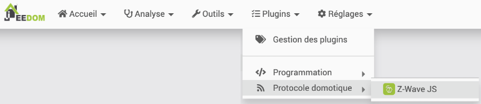
* Pendant le pairage, assurez-vous de brancher la prise assez près de la boîte domotique. Vous pourrez au besoin la déplacer par la suite. * Si la prise a déjà été pairée à un autre système (ce sera le cas avec le matériel prêté par l'école), vous devez d'abord la réinitialiser (factory reset). Vérifiez le manuel de l'utilisateur pour connaître les opérations à réaliser pour y parvenir. Dans le cas de la prise intelligente Zooz utilisée dans cet exemple, il faut appuyer sur le bouton pendant 20 secondes.
(source : https://www.getzooz.com/downloads/zooz-z-wave-plus-smart-plug-zen06-ver2-manual.pdf) * Une fois la prise réinitialisée, cliquez sur Inclusions dans Jeedom. Important : ne cliquez pas sur Synchroniser. Ceci ajouterait à votre boîte domotique tous les équipements qui avaient été pairés à votre clé Z-Wave l'an passé :-( * Choisissez le mode Inclusion par défaut puis cliquez sur Démarrer.

Note : avec le mode Inclusion par défaut, Jeedom fait une inclusions sécurisée s'il en est capable. Sinon, il faut une inclusions non sécurisée.
Le mode sécurisé assure que les paquets d'informations seront transmis de façon cryptée et ne seront décryptées qu'à leur arrivée.
Certains équipements ne fonctionnent qu'en mode sécurisé alors que d'autres ne supportent pas cette fonctionnalité.
Jeedom vous informera que le mode inclusion est activé.
Note : si vous obtenez à ce stade un message « Échec de la requête HTTP », « Connection refused » ou « Impossible de contacter le serveur Z-wave », c'est peut-être parce que le système n'a pas terminé l'inclusion de la clé USB Z-Wave ou encore parce que Jeedom a besoin d'être redémarré. Réessayez dans quelques minutes et au besoin, redémarrez le système. * Une fois que vous voyez le message indiquant le mode inclusion, vous devez effectuer une opération sur l'objet connecté pour le mettre en mode pairage.
L'action à réaliser est propre à chaque appareil.
Pour certains, vous devez appuyer sur un bouton un nombre spécifique de fois ou pendant une durée précise.
Pour d'autres, il faut entrer un bout de trombone dans un trou.
Pour d'autres encore, qui sont munis d'un système d'auto-inclusion, il faut simplement brancher l'appareil pendant que la boîte domotique est en mode inclusion.
Parfois, il faut retirer un capot pour accéder au bouton de pairage.
Vérifiez le manuel de l'utilisateur pour connaître l'opération à réaliser sur votre appareil. Dans le cas de la prise intelligente Zooz utilisée dans cet exemple, il faut appuyer sur le bouton de pairage pendant 3 secondes pour effectuer un pairage sécurisé.
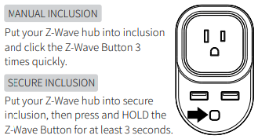
(source : https://www.getzooz.com/downloads/zooz-z-wave-plus-smart-plug-zen06-ver2-manual.pdf)
Remarquez qu'un appareil ne peut être pairé qu'avec une seule boîte domotique à la fois. Si l'appareil a déjà été pairé à une autre boîte, vous devrez d'abord défaire le pairage ou, si c'est impossible, effectuer une réinitialisation de l'appareil (factory reset). Consultez le manuel de l'appareil pour connaître la procédure. * Si Jeedom vous demande des classes de sécurité ou des clés de sécurité, vous pouvez simplement cliquer sur Continuer. Ceci fera en sorte que l'inclusion sera non sécurisée. * Jeedom affichera ensuite l'écran de configuration de l'équipement.
Remplissez les informations demandées :
- Nom de l'équipement
- Objet parent
- Si désiré : Catégorie

Avant de vous lancer dans des manipulations plus évoluées, assurez-vous que Jeedom communique adéquatement avec l'appareil connecté.
Pour ce faire, rendez-vous dans le menu Plugins / Protocole domotique / Z-Wave JS puis cliquez sur votre appareil connecté.
Cliquez sur le bouton Valeurs. Jeedom affichera les informations reçues du capteur.
Essayez de modifier une de ces valeurs pour voir si Jeedom en tient compte.
Par exemple, pour une prise intelligente, appuyez sur le bouton physique de la prise pour l'allumer ou pour l'éteindre. Jeedom devrait afficher ON ou OFF pour indiquer que la prise est allumée ou éteinte.
Remarquez qu'il peut y avoir un délai plus ou moins long avant que la modification d'une valeur apparaisse sur Jeedom.
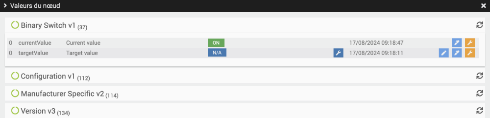
Dans le cas d'un capteur, par exemple un capteur de mouvement, ouvrez le boîtier du capteur afin de déclencher le détecteur de sabotage (tamper detection). Ici encore, le but est de s'assurer que Jeedom montre le changement de valeur.

26.4 Le noeud n'a pas encore de commande¶
Dans Jeedom, une commande correspond à une information qui doit être recueillie d'un appareil connecté.
En temps normal, Jeedom ajoute lui-même les commandes requises. Mais parfois, on obtient plutôt le message « Le nœud n'a pas encore de commande. » lorsqu'on va dans le menu Plugins / Protocole domotique / Z-Wave JS et qu'on clique sur un équipement.

Corriger des erreurs de programmation¶
Certaines versions de Z-Wave JS comportent des erreurs de programmation ou plutôt elles n'ont pas été mises à jour pour la dernière version du système d'exploitation.
Pour régler ce problème :
- Dans la fenêtre Terminal du Raspberry Pi, prenez une copie de sécurité du fichier qui contient des erreurs de programmation.
Terminal du Raspberry Pi
sudo cp /var/www/html/plugins/zwavejs/core/class/zwavejs.class.php /var/www/html/plugins/zwavejs/core/class/zwavejs.class-original.php
Terminal du Raspberry Pi
* Rendez-vous à la ligne 1595 en appuyant sur les touches Ctrl + _. * Modifiez la ligne log::add(__CLASS__, 'debug', '[' . __FUNCTION__ . ']' . _("Création d'une commande info", __FILE__) . ' ' . $_path); pourFichier zwavejs.class.php
log::add(\_\_CLASS\_\_, 'debug', '[' . \_\_FUNCTION\_\_ . ']' . \_("Création d'une commande info") . ' ' . $\_path);
Ajouter des commandes manuellement¶
Il est possible d'ajouter des commandes manuellement afin d'obtenir les informations désirées sur un objet connecté. Les commandes peuvent aussi se traduire en boutons pour envoyer des ordres à l'objet connecté (ex : Allume-toi!).
Suivez les étapes données sur la fiche « configurer_une_tuile ».
26.5 Configurer une tuile¶
Parfois, le Dashboard de Jeedom offre une présentation intéressante des informations de chaque objet connecté. D'autres fois, il faut effectuer un travail manuel pour que les informations désirées soient affichées.
Pour ajouter une information sur une tuile du Dashboard :
- Dans l'interface graphique de Jeedom, rendez-vous dans Plugins / Protocole domotique / Z-Wave JS puis cliquez sur l'équipement pour lequel vous désirez ajouter des informations.
- Cliquez sur Valeurs.
- Les valeurs sont présentées dans différentes sections, par exemple Binary Switch, Notification, etc. Certaines commandes sont de type Info, c'est-à-dire qu'elles permettent d'afficher un état. D'autres sont de type Action, c'est-à-dire qu'elles permettent d'envoyer un ordre à l'équipement, par exemple Allume-toi.
Selon votre besoin, cliquez sur l'icône « Créer la commande Action » ou « Créer la commande Info ».
Un même appareil comprend généralement plusieurs commandes. À vous d'explorer celles qui sont intéressantes.
Voici un exemple avec une prise intelligente.

Note : si vous avez en main une prise intelligente à intensité réglable (multilevel switch ou dimmable switch), la commande qui permet de modifier l'intensité pourrait s'appeler targetValue plutôt que On et Off.
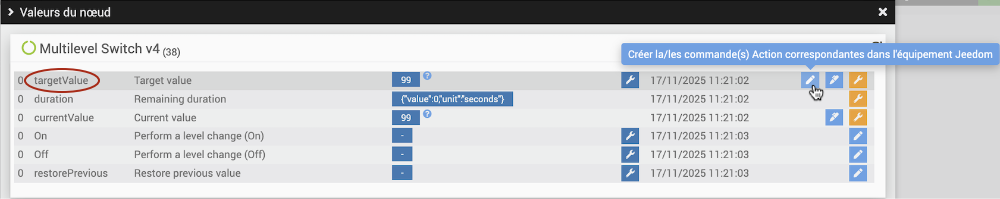
Important : si vous voyez un carré rouge sans texte qui apparaît au bas de l'écran, c'est que vous n'avez pas corrigé les erreurs de programmation dans le fichier /var/www/html/plugins/zwavejs/core/class/zwavejs.class.php. * Une fois la commande ajoutée, refermez cette fenêtre puis cliquez sur l'onglet Commandes. * Vous verrez au moins une nouvelle commande pour chaque ajout que vous avez réalisé. Dans cet exemple, une commande de type Info permet de savoir si la prise est allumée ou éteinte. Deux commandes de type Action ont été ajoutées, la première pour éteindre la prise, la seconde pour l'allumer.
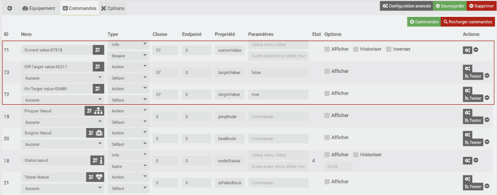
Note : si vous avez en main une prise intelligente à intensité réglable, la commande targetValue pourrait être associée par défaut à un gradateur dans le Dashboard (mention #slider#).
Vous pouvez au besoin ajouter des commandes (Bouton +Commandes) pour mettre carrément la prise en état Allumée (targetValue = 99) ou Éteinte (targetValue = 0).
La classe 38 correspond à un récepteur à intensité variable pour Jeedom.
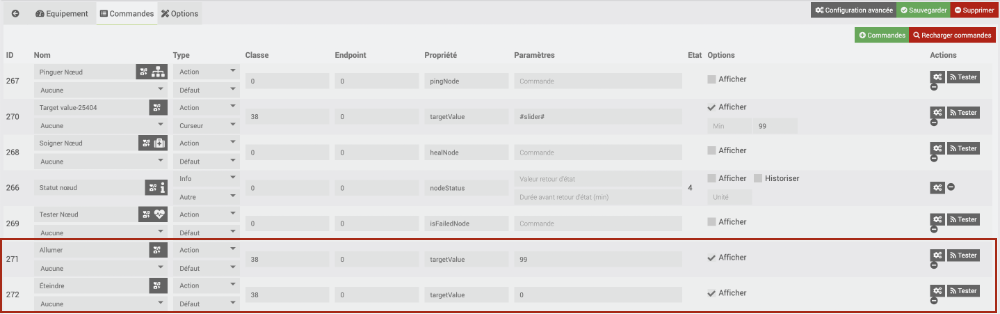
* Testez vos nouvelles commandes. Un clic sur le bouton Tester d'une commande de type Action effectuera cette action sur l'appareil connecté. La valeur d'une commande de type Info est affichée directement dans le tableau dans la colonne État. * Pour chaque commande, donnez-lui un nom significatif dans la colonne Nom puis cochez les cases Afficher et, pour les commandes de type Info, Historiser. * Dans le cas d'un capteur d'ouverture de porte, il arrive que la valeur retournée soit 22 lorsque la porte est ouverte (aimants éloignés) ou 23 lorsque la porte est fermée (aimants collés).
* Dans le cas d'un capteur d'ouverture de porte, il arrive que la valeur retournée soit 22 lorsque la porte est ouverte (aimants éloignés) ou 23 lorsque la porte est fermée (aimants collés).
Pour avoir un affichage plus intéressant, cliquez sur la roue crantée à droite de la commande. Dans l'onglet Configuration, entrez la formule de calcul #value#-22
Ceci fera en sorte que lorsque la porte est ouverte, on aura la valeur 0 et lorsqu'elle est fermée, on aura la valeur 1.
La valeur sera correctement calculée lors du prochain changement d'état.
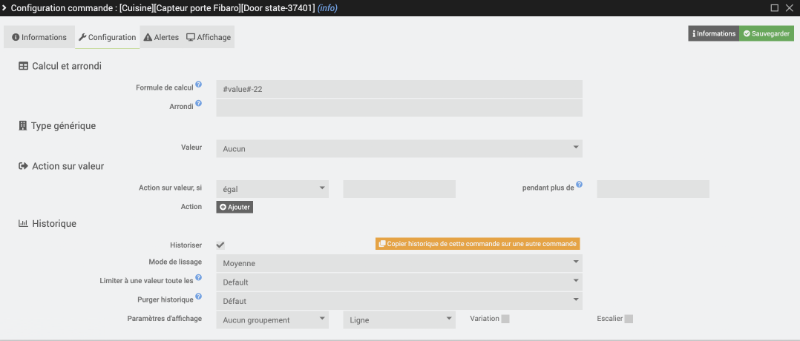
* De retour à l'onglet Commandes, vous pouvez modifier le type d'une commande. S'il est numérique, la valeur apparaîtra dans le tableau de bord sous forme de nombre. S'il est binaire, on verra plutôt un X (valeur 0) ou un crochet (toute autre valeur). * Autre configuration intéressante : cliquez sur le bouton Configuration avancée. Pour chacune des commandes affichées sur le Dashboard, cliquez sur l'icône de roue crantée puis, dans l'onglet Affichage, cochez Retour à la ligne forcé avant le widget et Retour à la ligne forcé après le widget. Les tuiles présenteront donc les information l'une sous l'autre. * Rendez-vous maintenant dans le menu Accueil / Dashboard. Vous avez maintenant accès aux commandes dans une interface plus intuitive.Pour plus d'information¶
« Capteur d’ouverture Z-Wave Gen7 d’Aeotec avec Jeedom ». /jeedomiser.fr. https://jeedomiser.fr/article/capteur-ouverture-z-wave-gen7-aeotec-avec-jeedom/
Jeedom-CommandeTargetValueMultilevelSwitch.
26.6 Configurer la page de synthèse¶
La page de synthèse n'affiche pas autant d'informations que le Dashboard mais elle offre une vue synthétisée et un visuel plus attrayant.
Elle affiche par défaut une tuile pour chaque objet (ex : maison, cuisine, salon) avec, comme image de fond, l'image que vous avez associée à cet objet.
Pour chaque objet, il est possible de déterminer ce qui doit y être affiché en configurant des résumés.
- Rendez-vous dans le menu Outils / Objets et cliquez sur l'objet que vous désirez configurer dans la synthèse.
- Cliquez sur l'onglet Résumé par équipements.
- Ciquez sur le nom d'un équipement pour afficher ses commandes.
- Cliquez sur le bouton Résumé(s) et cochez le type de résumé que vous désirez voir apparaître dans la synthèse.
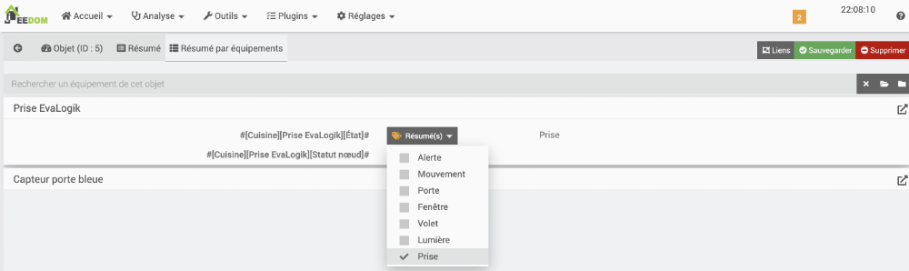
Lorsque la commande est binaire, un icône apparaîtra dans la synthèse, sur la tuile de l'objet, quand la commande sera activée (ex : prise allumée) et il disparaîtra quand la commande sera désactivée (ex : prise éteinte).
Dans le cas d'une commande numérique, par exemple une température, la valeur apparaîtra dans la barre supérieure de la tuile.
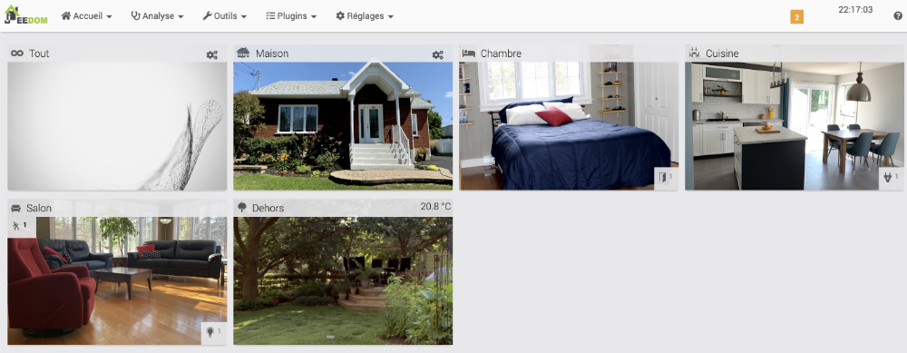
26.7 Ajouter une prise Wi-Fi Tuya/SmartLife à Jeedom¶

Les prises Wi-Fi sont généralement conçues pour passer par l'infonuagique afin d'être contrôlées par un appareil mobile à l'aide d'une application spécialisée.
Certaines peuvent néanmoins être ajoutées à une boîte domotique afin de pouvoir interagir avec d'autres objets connectés qui utilisent possiblement un autre protocole de communication, par exemple le protocole Z-Wave.
Les prises Wi-Fi Teckin font partie de cette catérogie.

Attention : les prises Teckin doivent être pairées dans l'application SmartLife avant d'être intégrées à Jeedom, ce qui peut déplaire aux usagers qui ne souhaitent pas passer par l'infonuagique avec leur système domotique.
De plus, l'application infonuagique SmartLife ne permet pas de faire plus d'une requête par minute, ce qui enlève beaucoup de réactivité aux prises Wi-Fi.
Configuration de la prise Wi-Fi sur votre téléphone¶
Les prises Wi-Fi Teckin sont conçues pour travailler avec l'application SmartLife. Vous devez installer cette application sur votre iPhone ou sur votre téléphone Android et ce, même si le but ultime est de contrôler la prise avec Jeedom.

Suivez les étapes détaillées pour le pairage dans l'application SmartLife,telephone. Ne suivez que les instructions de la section « Configuration de la prise Wi-Fi sur votre téléphone » car les autres sections ne concernent pas Jeedom.
Plugin SmartLife dans Jeedom¶
Pour rendre le pairage dans Jeedom possible, vous devez retrouver le plugin SmartLife disponible dans le market Jeedom.
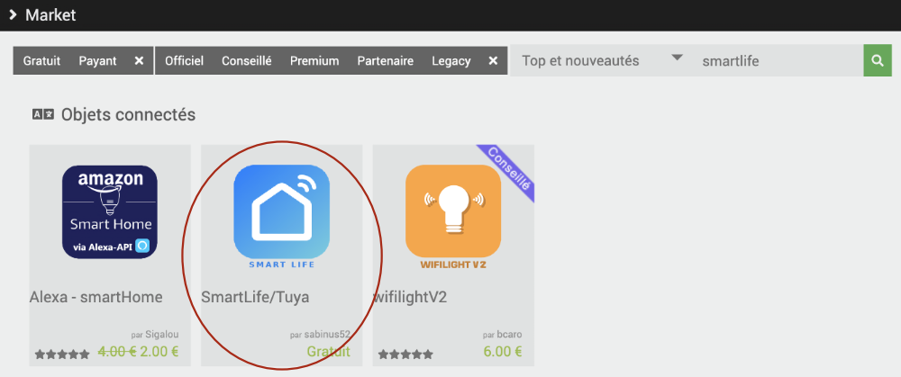
Installez ce plugin puis activez-le.
N'oubliez pas : pour que le pairage d'une prise Teckin dans Jeedom fonctionne, il faut que la prise soit associée à votre téléphone. Il est donc nécessaire d'entrer vos informations de connexion à l'application SmartLife dans le plugin.
Rendez-vous dans le menu Plugins / Objets connectés /Objets SmartLife/Tuya / Configuration puis remplissez la zone Configuration à partir de vos informatinos SmartLife.
- Utilisateur/Téléphone : informations utilisées pour vous connecter à l'application. Ceci pourrait être votre courriel.
- Mot de passe
- Code pays : retrouvez le code de votre pays dans cette liste : https://countrycode.org/. Le code pour le Canada est 1.
- Plateforme : SmartLife
Inutile de cliquer sur Tester la connexion, ceci ne fonctionnera pas et ce, même si les informations sont toutes bien entrées.
Cliquez sur Sauvegarder.
Rendez-vous dans le menu Plugins / Objets connectés /Objets SmartLife/Tuya puis cliquez sur Découverte des objets. Si tout se déroule normalement, vous devriez voir apparaître toutes les prises et tous les scénarios entrés sur l'application SmartLife.
Cliquez sur l'objet de votre choix et remplissez sa fiche comme vous le feriez pour n'importe quel objet connecté.
Pour plus d'information¶
« Documentation du plugin SmartLife ». Jeedom. https://sabinus52.github.io/jeedom-smartlife/fr_FR/
« La prise TECKIN, le plugin Smartlif et Jeedom ». YouDom. https://youdom.net/2022/02/24/la-prise-teckin-le-plugin-smartlif-et-jeedom/
26.8 Travailler avec la météo sous Jeedom¶
Les données météo peuvent servir de déclencheur pour un scénario Jeedom.
Les donnés météo de Jeedom proviennent de l'API Weather API et ne nécessitent aucune clé de configuration.
Intégrer la météo dans Jeedom¶
Pour avoir accès aux données météo dans Jeedom, installez le plugin gratuit Weather - officiel par Jeedom SAS.
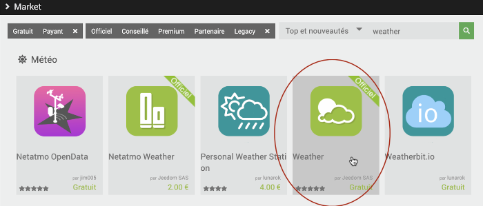
Une fois installé vous devrez l'activer sur sa page de configuration.
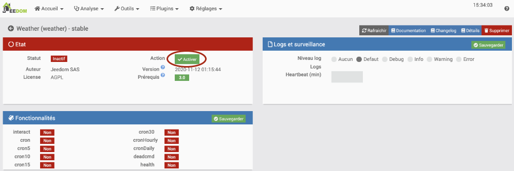
Pour préciser l'endroit pour lequel vous désirez avoir la météo, rendez-vous dans Plugins / Météo / Weather puis cliquez sur le +.
Jeedom vous demandera le nom de l'équipement. Entrez quelque chose du genre « Météo Victoriaville ».
Vous pourrez ensuite remplir les autres informations comme vous le feriez avec d'autres équipements.
Les coordonnées GPS peuvent être retrouvées sur Google Maps.

Si vous avez sélectionné un objet parent qui est visible sur le Dashboard et que vous avez rendu l'équipement de météo visible, vous pourrez voir la météo directement sur le Dashboard.
Pour voir toutes les informations présentées, vous devrez peut-être redimensionner la tuile,redimensionner de la météo.
Si aucune donnée météo n'est affichée, vous devez cliquer sur l'icône de rafraîchissement au coin supérieur droit de la tuile.

Voici la même tuile mais cette fois, après avoir coché Mode image.
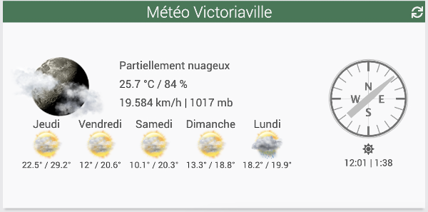
26.9 Exclure un appareil de Jeedom¶
Si un appareil connecté a déjà été inclus dans une boîte domotique, vous ne pourrez pas l'inclure dans une autre boîte sans avoir effectué une opération préalable.
Vous avez deux choix :
- Effectuer une réinitialisation de l'appareil (factory reset). Sur certains appareils, ceci consiste à appuyer sur le bouton d'inclusion de façon prolongée pendant 10 secondes. Consultez le manuel de l'appareil pour connaître la procédure spécifique à votre appareil.
ou * Exclure l'appareil de votre boîte domotique (même s'il n'a jamais été inclus dans cette boîte). Dans Jeedom, rendez-vous dans Plugins / Protocole domotique / Z-Wave JS / Bouton Inclusions. Choisissez Exclusion. Après avoir cliqué sur Démarrer, effectuez l'opération sur l'appareil connecté pour le mettre en mode pairage. Consultez le manuel de l'appareil pour connaître la procédure spécifique à votre appareil. Jeedom confirmera l'exclusion.
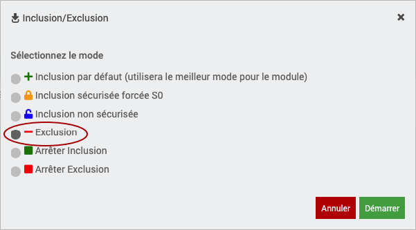